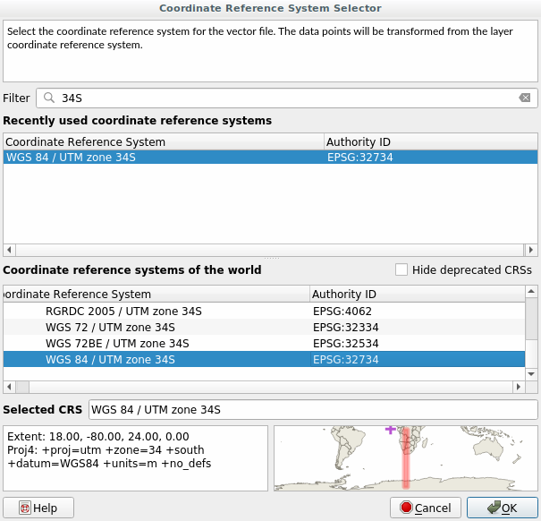

The CRS that all the data, as well as the map itself are in right now
is called WGS84.
This is a very common Geographic Coordinate System (GCS) for
representing data.
But there’s a problem, as we will see.
Save your current map
Then open the map of the world which you will find under
exercise_data/world/world.qgs
Zoom in to South Africa by using the Zoom In tool
Try setting a scale in the Scale field, which is in the
Statusbar along the bottom of the screen.
While over South Africa, set this value to 1:5000000
(one to five million).
Pan around the map while keeping an eye on the Scale
field
Notice the scale changing? That’s because you are moving away from the
one point that you zoomed into at 1:5000000, which was at the
center of your screen.
All around that point, the scale is different.
To understand why, think about a globe of the Earth.
It has lines running along it from North to South.
These longitude lines are far apart at the equator, but they meet at
the poles.
In a GCS, you are working on this sphere, but your screen is flat.
When you try to represent the sphere on a flat surface, distortion
occurs, similar to what would happen if you cut open a tennis ball and
tried to flatten it out.
What this means on a map is that the longitude lines stay equally far
apart from each other, even at the poles (where they are supposed to
meet).
This means that, as you travel away from the equator on your map, the
scale of the objects that you see gets larger and larger.
What this means for us, practically, is that there is no constant
scale on our map!
To solve this, let’s use a Projected Coordinate System (PCS) instead.
A PCS “projects” or converts the data in a way that makes allowance
for the scale change and corrects it.
Therefore, to keep the scale constant, we should reproject our data to
use a PCS.
6.1.2. ★☆☆ Follow Along: “On the Fly” Reprojection
By default, QGIS reprojects data “on the fly”. What this means is that even if
the data itself is in another CRS, QGIS can project it as if it were in a CRS of
your choice.
You can change the CRS of the project by clicking on the
Current projection button in the bottom
right corner of QGIS.
In the dialog that appears, type the word global into the
Filter field.
A few CRSs should appear in the
Predefined Reference Systems field below.
Select WGS 84 / NSIDC EASE-Grid 2.0 Global | EPSG:6933
entry by clicking on it, and then click OK.
Notice how the shape of South Africa changes.
All projections work by changing the apparent shapes of objects on
Earth.
Zoom to a scale of 1:5000000 again, as before.
Pan around the map.
Notice how the scale stays the same!
“On the fly” reprojection is also used for combining datasets that are
in different CRSs.
Add another vector layer to your map which has the data for South
Africa only.
You will find it as exercise_data/world/RSA.shp.
Load it.
A quick way to see its CRS is by hovering the mouse over the layer
in the legend. It is EPSG:3410.
What do you notice?
The layer is visible even if it has a different CRS from the
continents one.
6.1.3. ★★☆ Follow Along: Saving a Dataset to Another CRS
Sometimes you need to export an existing dataset with another CRS.
As we will see in the next lesson, if you need to make distance
calculations on layer, it is always better to have the layer in a
projected coordinate system.
Be aware that the ‘on the fly’ reprojection is related to the
project and not to single layers.
This means that a layer can have a different CRS from the project even
if you see it in the correct position.
You can easily export the layer with another CRS.
Add the buildings dataset from training_data.gpkg
Right-click on the buildings layer in the Layers
panel
Select Export ► Save Features As… in the menu
that appears.
You will be shown the Save Vector Layer as… dialog.
Click on the Browse button next to the
File name field
Navigate to exercise_data/ and specify the name of the new
layer as buildings_reprojected.shp.
Change the value of the CRS.
Only the recent CRSs used will be shown in the drop-down menu.
Click on the Select projection button next
to the drop-down menu.
The Coordinate Reference System Selector dialog will
appear.
In its Filter field, search for 34S.
Select WGS 84 / UTM zone 34S | EPSG:32734 from the list

Leave the other options unchanged.
The Save Vector Layer as… dialog now looks like this:
Click OK
You can now compare the old and new projections of the layer and see that they
are in two different CRS but they are still overlapping.
6.1.4. ★★★ Follow Along: Creating Your Own Projection
There are many more projections than just those included in QGIS by default.
You can also create your own projections.
Start a new map
Load the world/oceans.shp dataset
Go to Settings ► Custom Projections… and you
will see this dialog.
Click on the Add new CRS button to create a new
projection
An interesting projection to use is called VanderGrintenI.
Enter its name in the Name field.
This projection represents the Earth on a circular field instead of
a rectangular one, as most other projections do.
In Format, select WKT (Recommended)
Add the following string in the Parameters field:
PROJCRS["unknown",BASEGEOGCRS["unknown",DATUM["unknown",ELLIPSOID["unknown",6371000,0,LENGTHUNIT["metre",1,ID["EPSG",9001]]]],PRIMEM["Greenwich",0,ANGLEUNIT["degree",0.0174532925199433],ID["EPSG",8901]]],CONVERSION["unknown",METHOD["Van Der Grinten"],PARAMETER["Longitude of natural origin",0,ANGLEUNIT["degree",0.0174532925199433],ID["EPSG",8802]],PARAMETER["False easting",0,LENGTHUNIT["metre",1],ID["EPSG",8806]],PARAMETER["False northing",0,LENGTHUNIT["metre",1],ID["EPSG",8807]]],CS[Cartesian,2],AXIS["(E)",east,ORDER[1],LENGTHUNIT["metre",1,ID["EPSG",9001]]],AXIS["(N)",north,ORDER[2],LENGTHUNIT["metre",1,ID["EPSG",9001]]]]
Click OK
Click on the Current CRS button at the
right of the status bar to change the project CRS
Choose your newly defined projection (search for its name in the
Filter field)
On applying this projection, the map will be reprojected thus:
Different projections are useful for different purposes. By choosing the
correct projection, you can ensure that the features on your map are being
represented accurately.
 Current projection button in the bottom
right corner of QGIS.
Current projection button in the bottom
right corner of QGIS. Select projection button next
to the drop-down menu.
Select projection button next
to the drop-down menu.

 Add new CRS button to create a new
projection
Add new CRS button to create a new
projection